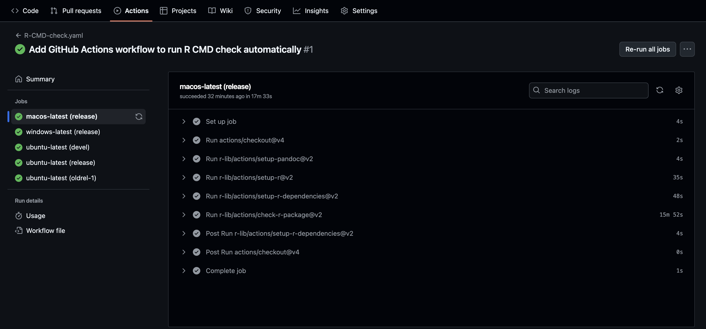
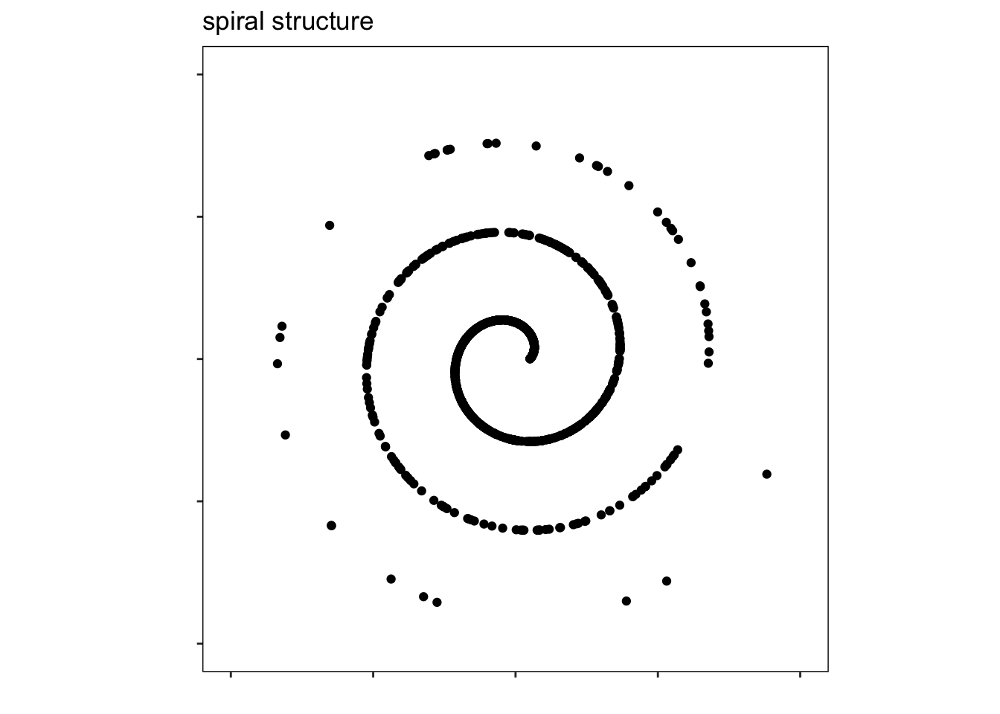
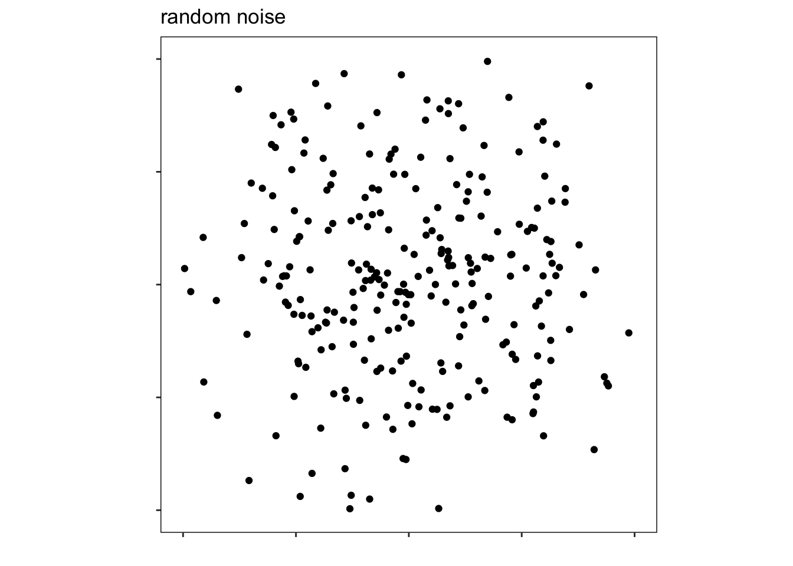

# install.packages("devtools")
library(devtools)GSoC 2025: Tests for the Spinebil R package
📦 Overview
This document describes the process of running the tests for the spinebil package and how I identified and resolved various issues to make the package pass devtools::check() with no errors or warnings. This is part of my work for Google Summer of Code 2025.
In addition to the devtools::check() debugging, I also completed the other two required tests:
- I added a GitHub Actions workflow to automate CRAN checks.
- I conducted a simulation study to explore the minimum and maximum of the
stringyscagnostic index.
1️⃣ First test
- Easy: Fork the package and run the package checks using devtools. Make the fixes needed for it to pass CRAN checks.
🔍 First Check: devtools::check()
To begin, I created a Quarto (.qmd) file inside a new folder named GSoC_spinebil_tests within the spinebil package repository that I have froked. Since .qmd files are not part of a typical R package structure, I added the file to .Rbuildignore to ensure that devtools::check() would not throw an error during the package check process.
Next, I installed and loaded the devtools package using:
Then, I ran devtools::check() to evaluate the current state of the spinebil package and identify any errors, warnings, or notes that need to be fixed.
devtools::check()── R CMD check results ──────────────────────────────── spinebil 0.1.1 ────
Duration: 15.4s
❯ checking examples with --run-donttest ... ERROR
Running examples in ‘spinebil-Ex.R’ failed
The error most likely occurred in:
> base::assign(".ptime", proc.time(), pos = "CheckExEnv")
> ### Name: compareSmoothing
> ### Title: Compare traces with different smoothing options.
> ### Aliases: compareSmoothing
>
> ### ** Examples
>
> ## No test:
> d <- spiralData(4, 100)
> tPath <- tourr::save_history(d, max_bases=2)
> tPath <- as.list(tourr::interpolate(tPath))
> idx <- scagIndex("Skinny")
> compS <- compareSmoothing(d, tPath, idx, n=5)
Error in loadNamespace(x) : there is no package called ‘binostics’
Calls: compareSmoothing ... loadNamespace -> withRestarts -> withOneRestart -> doWithOneRestart
Execution halted
❯ checking package dependencies ... NOTE
Package suggested but not available for checking: ‘binostics’
1 error ✖ | 0 warnings ✔ | 1 note ✖❗ First Error : There is no package called binostics
The binostics package was originally used in spinebil to compute scagnostic indices. However, binostics has been deprecated and removed from CRAN, making it unusable as a dependency for a CRAN-ready package.
To resolve this, I replaced all usage of binostics with the cassowaryr package, which is an actively maintained package on CRAN that also computes scagnostics. It provides similar functionality and includes functions like calc_scags() and individual index functions such as sc_stringy() and sc_skinny().
🔧 Updating Package Dependencies
In order to use the cassowaryr package, which provides scagnostic computations, I added cassowaryr to the Imports field in the DESCRIPTION file of the spinebil package.
At the same time, I removed the binostics package from the Suggests field, as it is deprecated and no longer available on CRAN. Keeping it in DESCRIPTION caused errors during devtools::check(), so removing it was necessary for compatibility.
Changes made to DESCRIPTION:
Before:
- Imports: tourr, ggplot2, tibble, stats, dplyr, tidyr, tictoc, magrittr
- Suggests: minerva, binostics, testthat, purrr
After:
- Imports: tourr, ggplot2, tibble, stats, dplyr, tidyr, tictoc, magrittr, cassowaryr
- Suggests: minerva, testthat, purrr
Re-checking the Package
After updating the DESCRIPTION file to include cassowaryr and removing binostics, I re-ran the full package check using:
devtools::check()── R CMD check results ─────────────────────────────── spinebil 0.1.1 ────
Duration: 10.1s
❯ checking examples with --run-donttest ... ERROR
Running examples in ‘spinebil-Ex.R’ failed
The error most likely occurred in:
> base::assign(".ptime", proc.time(), pos = "CheckExEnv")
> ### Name: compareSmoothing
> ### Title: Compare traces with different smoothing options.
> ### Aliases: compareSmoothing
>
> ### ** Examples
>
> ## No test:
> d <- spiralData(4, 100)
> tPath <- tourr::save_history(d, max_bases=2)
> tPath <- as.list(tourr::interpolate(tPath))
> idx <- scagIndex("Skinny")
> compS <- compareSmoothing(d, tPath, idx, n=5)
Error in loadNamespace(x) : there is no package called ‘binostics’
Calls: compareSmoothing ... loadNamespace -> withRestarts -> withOneRestart -> doWithOneRestart
Execution halted
❯ checking dependencies in R code ... WARNING
'::' or ':::' import not declared from: ‘binostics’
Namespace in Imports field not imported from: ‘cassowaryr’
All declared Imports should be used.
1 error ✖ | 1 warning ✖ | 0 notes ✔Now, the error message indicated that all imported packages must be used, and that the examples in the spinebil package still referenced the deprecated binostics package. To fix this, I needed to update all examples that used binostics functions and replace them with equivalent calls from the cassowaryr package.
For instance, in the distances.R file, under the examples for “Estimating squint angle of 2-D structure in high-D dataset”, the following line originally used the scagIndex() function from binostics:
indexF <- scagIndex("Skinny")To make it work with cassowaryr package, and to avoid runtime errors, I converted it into a proper function that takes a projected dataset xy as input:
indexF <- function(xy) {
cassowaryr::calc_scags(xy[, 1], xy[, 2], scag = "skinny")[[1]]
}I then applied the same modification across all other example files in the package where binostics was used. In each case, I replaced calls to scagIndex() with a functional form using cassowaryr::calc_scags(), ensuring that the index function accepts a projected dataset (xy) as input.
devtools::check()── R CMD check results ─────────────────────────────── spinebil 0.1.1 ────
Duration: 13m 1.7s
❯ checking examples with --run-donttest ... [13m/13m] ERROR
Running examples in ‘spinebil-Ex.R’ failed
The error most likely occurred in:
> base::assign(".ptime", proc.time(), pos = "CheckExEnv")
> ### Name: squintAngleEstimate
> ### Title: Estimating squint angle of 2-d structure in high-d dataset under
> ### selected index.
> ### Aliases: squintAngleEstimate
>
> ### ** Examples
>
> ## No test:
> data <- spiralData(4, 100)
> indexF <- function(xy){cassowaryr::calc_scags(xy[,1], xy[,2], scag ="skinny")[[1]]}
> cutoff <- 0.7
> structurePlane <- basisMatrix(3,4,4)
> squintAngleEstimate(data, indexF, cutoff, structurePlane, n=1)
Error in allBases[[j]] : subscript out of bounds
Calls: squintAngleEstimate
Execution halted
❯ checking dependencies in R code ... WARNING
'::' or ':::' import not declared from: ‘binostics’
Namespace in Imports field not imported from: ‘cassowaryr’
All declared Imports should be used.
1 error ✖ | 1 warning ✖ | 0 notes ✔❗ Error in squintAngleEstimate()
While running devtools::check(), I encountered the following runtime error in the examples of the squintAngleEstimate() function:
Error in allBases[[j]] : subscript out of bounds
This error occurred during the example execution because the index j exceeded the length of the allBases list. In the function, allBases contains interpolated projection matrices. The loop that searches for a projection with an index value exceeding a given cutoff did not check whether j had gone out of bounds, leading to the error.
🔧 How I fixed it
To resolve this issue, I updated the loop to include a boundary check using:
while (cIndex < cutoff && j <= length(allBases)) {
cProj <- data %*% allBases[[j]]
cIndex <- indexF(cProj)
j <- j + 1
}Additionally, I added a conditional check after the loop to avoid accessing an invalid index:
if (j > length(allBases)) {
angles[i] <- NA
} else {
cDist <- tourr::proj_dist(allBases[[j]], structurePlane)
angles[i] <- cDist
}These changes prevent the function from crashing and allow it to return NA if no projection satisfies the cutoff condition, making the function more robust during package checks and real usage.
devtools::check()── R CMD check results ─────────────────────────────── spinebil 0.1.1 ────
Duration: 13m 20s
❯ checking examples with --run-donttest ... [13m/13m] ERROR
Running examples in ‘spinebil-Ex.R’ failed
The error most likely occurred in:
> base::assign(".ptime", proc.time(), pos = "CheckExEnv")
> ### Name: timeSequence
> ### Title: Time each index evaluation for projections in the tour path.
> ### Aliases: timeSequence
>
> ### ** Examples
>
> ## No test:
> d <- spiralData(4, 1000)
> t <- purrr::rerun(10, tourr::basis_random(4))
Warning: `rerun()` was deprecated in purrr 1.0.0.
ℹ Please use `map()` instead.
# Previously
rerun(10, tourr::basis_random(4))
# Now
map(1:10, ~ tourr::basis_random(4))
> idx <- indexF <- function(xy){cassowaryr::calc_scags(xy[,1], xy[,2], scag ="skinny")[[1]]}
> timeSequence(d, t, idx, 10)
Error in unlist(tictoc::tic.log(format = FALSE))["toc.elapsed"] - unlist(tictoc::tic.log(format = FALSE))["tic.elapsed"] :
non-numeric argument to binary operator
Calls: timeSequence
Execution halted
❯ checking dependencies in R code ... WARNING
'::' or ':::' import not declared from: ‘binostics’
Namespace in Imports field not imported from: ‘cassowaryr’
All declared Imports should be used.
1 error ✖ | 1 warning ✖ | 0 notes ✔❗ Two Additional Errors Detected During devtools::check()
While re-running devtools::check() on the updated spinebil package, I encountered two more issues:
1. Deprecated purrr::rerun() function
Warning: rerun() was deprecated in purrr 1.0.0. ℹ Please use map() instead. I replaced it with purrr::map()
2. Runtime error in timeSequence() due to unlist() on tictoc::tic.log()
The function originally used:
resT <- unlist(tictoc::tic.log(format = FALSE))["toc.elapsed"] -
unlist(tictoc::tic.log(format = FALSE))["tic.elapsed"]This caused the following error:
non-numeric argument to binary operatorCalling unlist() returns a list where each element (like “toc.elapsed”) may be coerced to a character string, breaking numeric subtraction.
I rewrote this part of the function to extract the toc and tic values as numeric values:
log <- tictoc::tic.log(format = FALSE)
resT <- log[[1]]$toc - log[[1]]$ticI also updated the code inside timer.R to fix an issue with how the list of projection matrices was generated. Originally, the code used:
t <- purrr::map(10, tourr::basis_random(4))However, this caused problems during matrix multiplication because the output was not a list of 10 projection matrices as intended, instead, it returned a single-element list. This led to a mismatch in dimensions when using %*%. I replaced it with the following:
t <- purrr::map(1:10, ~ tourr::basis_random(4))Now, I will run devtools::check() once again to verify the current state of the package and see if any new errors, warnings, or notes appear.
devtools::check()── R CMD check results ─────────────────────────────── spinebil 0.1.1 ────
Duration: 13m 20.2s
❯ checking dependencies in R code ... WARNING
'::' or ':::' import not declared from: ‘binostics’
0 errors ✔ | 1 warning ✖ | 0 notes ✔After running devtools::check(), I encountered the following warning:
checking dependencies in R code ... WARNING '::' or ':::' import not declared from: ‘binostics’To identify the source of this warning, I used Cmd + Shift + F in RStudio to search for the term binostics across the entire package directory. I discovered that the warning was coming from the indexFunctions.R file, where the binostics package was still being used inside the scagIndex() function.
The original line was:
sR <- binostics::scagnostics(mat)[1,][indexName]I replaced it with the corresponding function from the cassowaryr package:
sR <- cassowaryr::calc_scags(mat)[1,][indexName]After implementing all necessary fixes, replacing deprecated functions, updating dependencies, and cleaning up example code, I ran a final devtools::check() to validate the package.
devtools::check()── R CMD check results ─────────────────────────────── spinebil 0.1.1 ────
Duration: 13m 9.5s
0 errors ✔ | 0 warnings ✔ | 0 notes ✔This indicates that the package has passed all checks successfully and is ready for CRAN submission.
2️⃣ Second test
- Medium: Add a GitHub Actions workflow to automate the CRAN checks when code is pushed to the GitHub.
To automate CRAN-style checks for the spinebil package, I created a GitHub Actions workflow named R-CMD-check. This workflow is located at .github/workflows/R-CMD-check.yaml and runs automatically on every push or pull request to the repository.
After pushing the workflow file to GitHub, I verified that the action was triggered successfully via the “Actions” tab in my repository.
✅ GitHub Actions Workflow Check Result
The GitHub Actions workflow ran successfully, showing that the spinebil package passes R CMD check on all major platforms.

3️⃣ Third Test
- Hard: Write a simulation to check the minimum and maximum values that we might observe for any 2D pattern for the stringy index available in tourr package. Report the data generated for testing, and the minimum and maximum values that would be expected.
I am going to install and load the required libraries, and then I will test the stringy function for two datasets:
- A 2D dataset generated using
spiralData()which is available in thespinebilpackage. - A random noise dataset generated using
rnorm().
Then, I will run a simulation to find the maximum and minimum values of the stringy index for these two types of patterns.
🔍 Step 1: Install and load the tourr package
The stringy function is available in the tourr package. First, I install and load it:
# install.packages("tourr")
library(tourr)🔍 Step 2: Call the stringy function and understand its usage
tourr::stringy()function (mat)
{
cassowaryr::sc_stringy(mat[, 1], mat[, 2])
}
<bytecode: 0x13077ffe8>
<environment: 0x130780528>When I inspect the stringy() function using tourr::stringy, we see that it is actually from a different package. The actual computation of the stringy index is performed by the function sc_stringy() from the cassowaryr package.
The stringy index is one of the scagnostics (scatterplot diagnostics) features. It measures how much a 2D scatterplot resembles a stringy or elongated structure. The value of stringy is always between 0 and 1:
- A higher value (close to 1) indicates that the data has a strong stringy or elongated pattern.
- A lower value (close to 0) suggests the data is more scattered, unstructured, or noise-like.
To explore this behavior, I will apply the stringy index to two datasets:
- Spiral dataset: Using
spiralData()from thespinebilpackage, which generates a spiral pattern. I expect this to have a high stringy value because of its elongated structure. - Noise dataset: Generated using
rnorm(), which creates spread-out, structureless data. I expect thestringyindex to be low for this case.
Creating the First Dataset: Spiral Pattern
First, I created a dataset with a clear elongated structure using the spiralData() function from the spinebil package:
library(ggplot2)
first_data <- spinebil::spiralData(2, 1000)
first_data <- as.data.frame(first_data)
ggplot(first_data, aes(x = V1, y = V2 )) +
geom_point() +
labs(title = "spiral structure") +
xlim(c(-2, 2)) +
ylim(c(-2, 2)) +
xlab("") +
ylab("") +
theme(
aspect.ratio = 1,
axis.text = element_blank(),
panel.grid = element_blank(),
panel.background = element_rect(fill = NA, colour = "black")
)
This function generates a 2D spiral-shaped dataset, which is a good candidate for exhibiting a high stringy value due to its long, continuous structure.
To calculate the stringiness of this dataset, I have used the following approaches:
# using `tourr` package
tourr::stringy()(first_data)[1] 0.991911# using the `cassowaryr` package directly
cassowaryr::sc_stringy(first_data[,1], first_data[,2])[1] 0.991911As observed from the result, the spiral dataset gave a stringy value of approximately 0.99, which indicates a highly elongated and stringy pattern. This aligns with my expectation, as spiral-shaped data exhibits strong continuity.
Now, to better understand the behavior of the stringy index, I will run a simulation.
Simulation
To explore the min and max of values, I simulated the process 500 times using spiralData() and stored all resulting stringy values.
library(dplyr)
Attaching package: 'dplyr'The following objects are masked from 'package:stats':
filter, lagThe following objects are masked from 'package:base':
intersect, setdiff, setequal, unionset.seed(1225)
n_sim <- 500
results <- data.frame(sim = numeric(0), stringy_val = numeric(0))
for (i in 1:n_sim) {
data <- spinebil::spiralData(2, 1000)
data <- data[!duplicated(data), ]
val <- tryCatch({
suppressWarnings(cassowaryr::sc_stringy(data[,1], data[,2]))
}, error = function(e) {
NA
})
new_row <- data.frame(sim = i, stringy_val = val)
results <- rbind(results, new_row)
}
results %>%
summarise(
min_stringy = min(stringy_val, na.rm = TRUE),
max_stringy = max(stringy_val, na.rm = TRUE)
) min_stringy max_stringy
1 0.9888551 0.998997This output will give the minimum and maximum stringy values observed across all simulated spiral patterns.
Creating the Second Dataset: Random Noise Data
To compare the behavior of the stringy index on unstructured data, I created a dataset consisting of two columns of values randomly generated from a standard normal distribution using rnorm(). Since this data is randomly scattered and does not follow any clear pattern or direction, I expect the stringy index to return low values, close to 0.
noise1 <- rnorm(300, 0, 1)
noise2 <- rnorm(300, 0, 1)
second_data <- data.frame(noise1, noise2)
ggplot(second_data, aes(x = noise1, y = noise2 )) +
geom_point() +
labs(title = "random noise") +
xlab("") +
ylab("") +
xlim(c(-2, 2)) +
ylim(c(-2, 2)) +
theme(
aspect.ratio = 1,
axis.text = element_blank(),
panel.grid = element_blank(),
panel.background = element_rect(fill = NA, colour = "black")
)
cassowaryr::sc_stringy(noise1,noise2)[1] 0.7489362Simulation
Now in the simulations, I will repeat this process 500 times to explore the minimum and maximum stringy values for random noise.
library(dplyr)
set.seed(4567)
n_sim <- 500
results_noise <- data.frame(sim = numeric(0), stringy_val = numeric(0))
for (i in 1:n_sim) {
noise1 <- rnorm(300, 0, 1)
noise2 <- rnorm(300, 0, 1)
data <- cbind(noise1, noise2)
val <- cassowaryr::sc_stringy(data[, 1], data[, 2])
results_noise <- rbind(results_noise, data.frame(sim = i, stringy_val = val))
}
results_noise %>%
summarise(
min_stringy = min(stringy_val, na.rm = TRUE),
max_stringy = max(stringy_val, na.rm = TRUE)
) min_stringy max_stringy
1 0.6576577 0.7842324